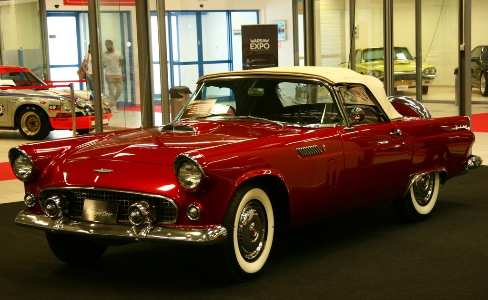

FORD Thunderbird V8
1956r. - SPRZEDAM

CENA: 154 800,00zł
PARAMETRY TECHNICZNE
stan: używany
marka: Ford
rok produkcji: 1956
pojemność silnika [cm3]: 5100
moc [KM]: 215
rodzaj paliwa: benzyna
nadwozie: kabriolet
liczba miejsc: 2
skrzynia biegów: automatyczna
napęd: na tylną oś
kolor: czerwony
uszkodzony: nie
kierownica po prawej (Anglik): nie
kraj pochodzenia: Stany Zjednoczone
informacje dodatkowe: bezwypadkowy
wyposażenie: klimatyzacja, radio
NUMER KONTAKTOWY: 602 181 533